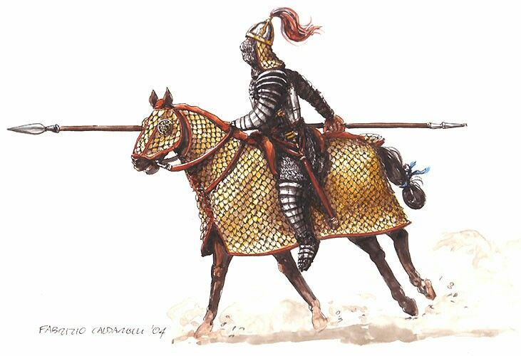
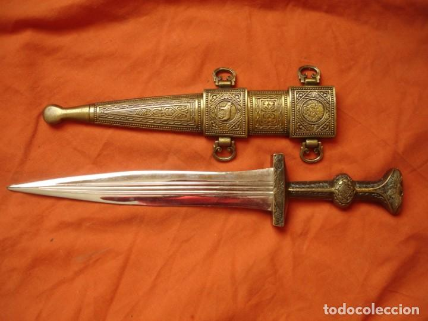

Armas Romanas
Hasta
A hasta era uma lança romana que deu nome aos soldados hastati. Era uma lança leve, feita de madeira rija e com uma ponta de ferro. Tinha por volta de 2 metros de comprimento e era usada, ao contrário do pilum, para empurrar, ou para espetar. Geralmente, a hasta não era usada para lançar, sendo os legionários treinados para que não o fizessem.
Espata
A spatha era a espada típica da cavalaria romana. Era uma espada que se opunha ao gládio em muitas maneiras. Ao contrário do gládio, o spatha era uma espada longa. Era também esperado dos cavaleiros que usassem um estilo de combate em que cortassem, não que apunhalassem o inimigo. A spatha tinha entre 75 cm e 1 metro de comprimento.

Gládio
O gládio era a principal arma de ataque do legionário romano. Era uma arma curta e usada para perfurar, não para cortar. Os legionários romanos eram treinados para perfurar a zona abdominal do adversário e depois, num movimento de pulso, afetar os órgãos vitais do seu oponente, ou seja, eles deviam usar o gládio quase como um punhal. Esta arma tinha entre 64 e 81 cm de comprimento, sendo que entre 60 e 68 cm eram lâmina que tinha uma largura entre 4 e 8 cm.

Pudio
O pugio era uma pequena adaga romana que era também usada fora do exército, em suicídios ou em assassinatos, sendo que, por exemplo, Júlio César foi assassinado com o auxílio de pugios. O pugio era uma arma auxiliar romana, sendo normalmente usada com o gládio. O pugio tinha entre 18 e 28 cm de comprimento e pelo menos 5 cm de largura. Estas medidas foram as primeiras, sendo que o pugio ainda sofreu algumas alterações posteriormente.
